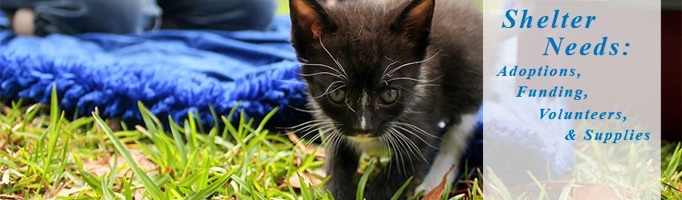

Looking for a meaningful and lasting gift for a Pet Lover? Donate a Kuranda dog or cat bed to one of our shelter residents in the name of a friend or family member. A personalized gift card will be mailed to them to inform them of the wonderful gift you have selected in their name. Donate a Kuranda bed.

ADOPTIONS
One of our four big needs is adoption. What makes that one of the big four? Adoptions allow us to help abandoned and unwanted cats and dogs find a loving home. With each adoption, a life is saved.
Also with each adoption the shelter, through the adoption fee, gets the much needed financial support to continue its lifesaving efforts.
Funding Support
Pet Welfare is a 501(c)(3) tax exempt, charitable, nonprofit organization. Cash gifts are very important to Pet Welfare and are the easiest way to support our work. You can simply write a check or send a money order. Donations are deductible to the full extent allowed by law.
100% of all monetary donations go directly to maintain the shelter and to provide a safe and healthy environment for the animals while they wait to be adopted into a forever home of their own!
Pet Welfare will put your gift to work immediately on behalf of our animals.
The donations are used for:
Veterinary services (rabies shots, spay/neutering, medical procedures) Cat and dog food (includes special diet foods as prescribed by a vet) Supplies (cleaning material, cat litter, office supplies)
WHAT
YOU